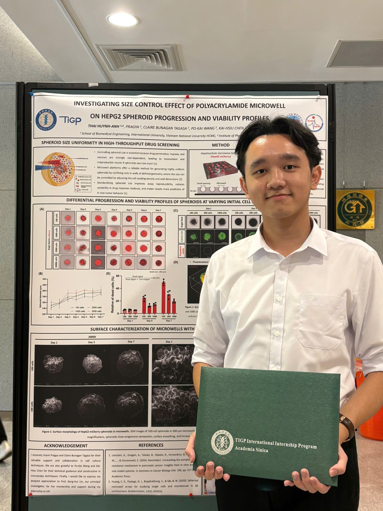
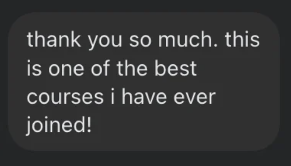

ĐIỂM KHÁC BIỆT CỦA KHOÁ HỌC TẠI SYANSFORM LÀ GÌ?
Khoá học được thiết kế cho các sinh viên đang thực hiện nghiên cứu khoa học/đồ án/luận văn
Tư duy nghiên cứu
Cung cấp khung tư duy phân tích. Framework trình bày đã được cô đọng từ kinh nghiệm cá nhân, tài liệu, và được kiểm chứng hiệu quả qua nhiều môn học.
Bạn quá bận rộn?
Lộ trình lớp học tinh gọn & thực hành trực tiếp cho mỗi nội dung.
Không phải sinh viên Y Sinh có học được không?
Khoá học được điều chỉnh tuỳ thuộc vào lĩnh vực của học viên.
LỘ TRÌNH KHOÁ HỌC TẠI SYANSFORM
Khoá học gồm 04 buổi lý thuyết (90 phút/buổi) & 01 buổi final exam giúp học viên "gói mang về" kinh nghiệm thực chiến
Giải mã các myths & truths
- check_circle Giới thiệu 03 hiện tượng tâm lý trong thuyết trình khoa học
- check_circle Giới thiệu framework tiếp cận
BACK-END
- check_circle Xây dựng bố cục
- check_circle Thực chiến: Phân tích bố cục nghiên cứu
Front-end
- check_circle Liên kết các nội dung đã phân tích
- check_circle Thực hiện "bản thiết kế" slide
Delivery & Defense
- check_circle Nguyên lý thiết kế
- check_circle Phản biện tự tin & Mở rộng
Đồ án cuối khóa
- check_circle Tổng kết lộ trình
- check_circle Thuyết trình cuối khoá

Thực tập Quốc tế
Tốt nghiệp Kỹ sư loại Xuất sắc
MENTOR: HUỲNH ANH THÁI
Kinh nghiệm xây dựng bài thuyết trình đạt điểm A*, thuyết trình tại hội nghị quốc tế, thành tích thực tập xuất sắc, điểm phản biện luận văn 95/100 (cao nhất hội đồng).
FEEDBACK TỪ HỌC VIÊN
Hơn 10+ học viên đã thành công và có sự thay đổi rõ rệt trong tư duy xây dựng bài thuyết trình khoa học
